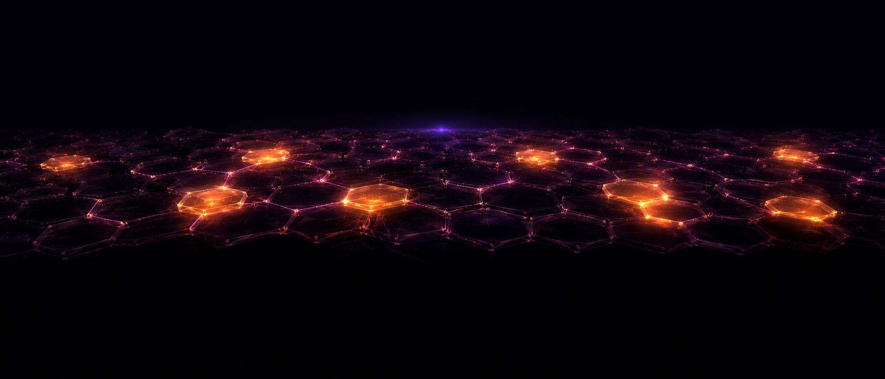
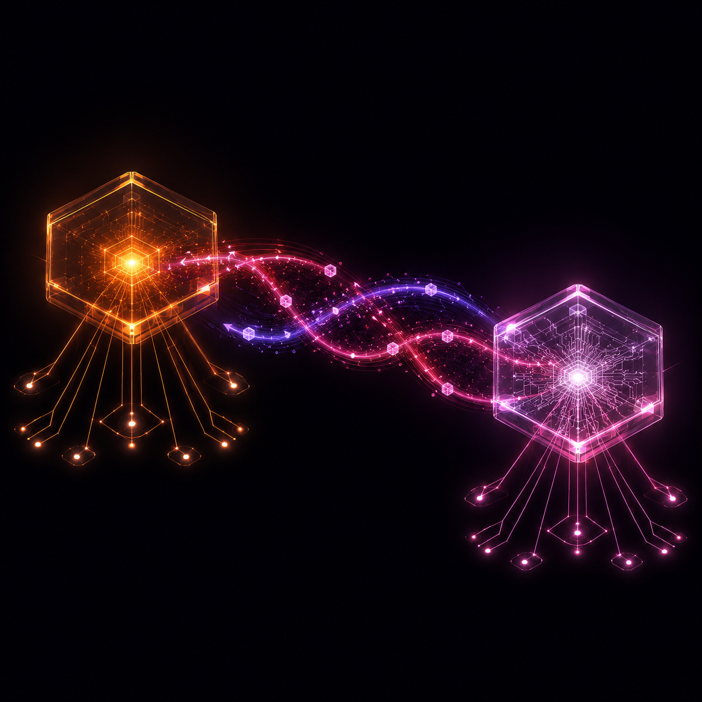
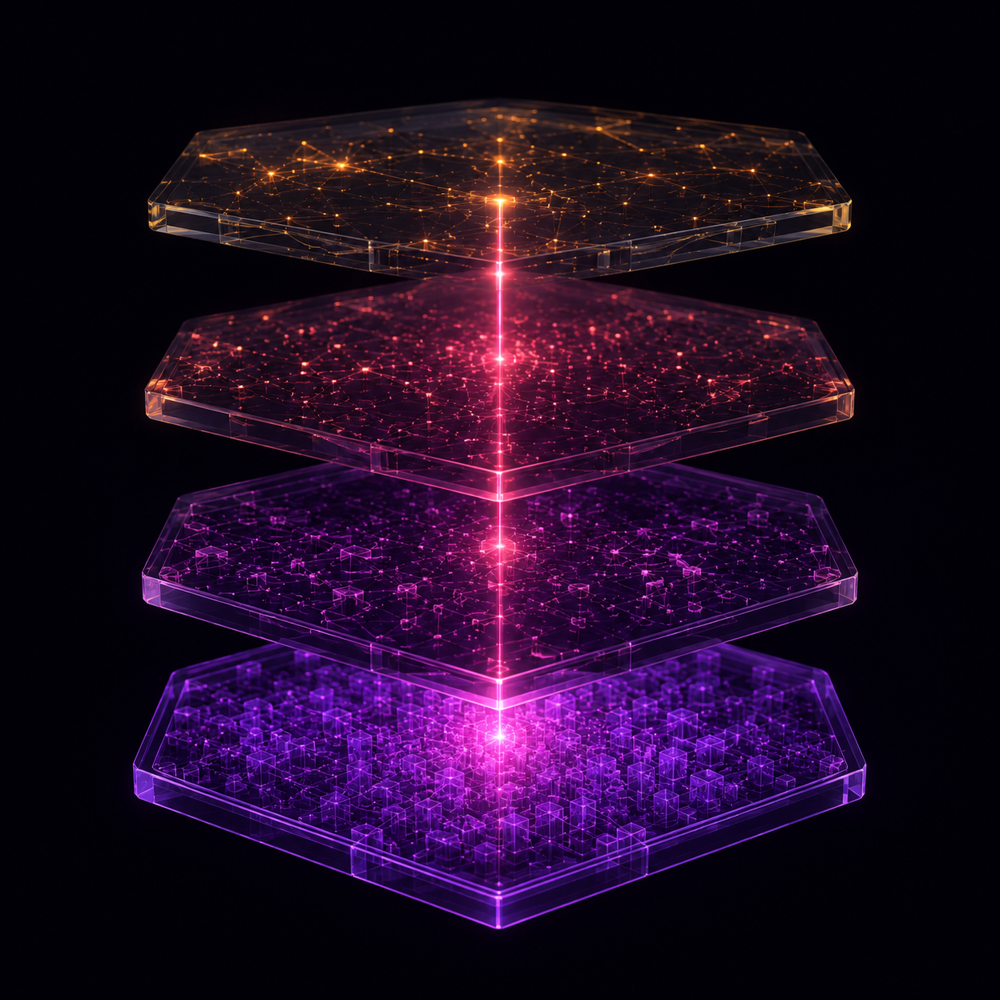

Your AI team.
Actually a team.
Hive turns a Claude Code session into a coordinated swarm of 25 AI specialists — with the structure, gates, and memory of a real software organization.
A swarm with roles — not one model improvising.
Twenty-five specialized personas, each with a defined job, coordinating through structured workflows.
A swarm with roles
Analyst, architect, developer, tester, reviewer, and more — each a defined station, coordinating through structured workflows instead of one model doing everything.
Discipline built in
Every project moves through kickoff, plan, execute, review, test, and ship. Human-in-the-loop gates keep you in command at every phase boundary.
Cross-model execution
Route implementation to OpenAI Codex while Claude orchestrates and reviews. Two models, adversarially paired — lower cost, and no model grading its own homework.
The test swarm
A five-agent pipeline authors tests, runs them, files bugs, and routes fixes automatically. Failures become tickets, not surprises.
Memory that compounds
Layered L0–L3 memory persists decisions across sessions and projects: session insights, a compiled wiki, a knowledge graph, and an optional semantic index.
Extensible to the core
Add agents, skills, workflows, and whole teams without touching Hive's core. It's a substrate, not a walled garden.

Six phases. Human gates between them.
Kickoff
Discover the codebase or shape the greenfield vision; set the north star.
/hive:kickoffPlan
Decompose requirements into an epic of dependency-tracked stories.
/hive:planExecute
The swarm implements stories in parallel, each agent at its station.
/hive:executeReview
Structured, adversarial code review — findings become revision loops.
/hive:reviewTest
The five-agent test swarm exercises the build and files what it finds.
/hive:testShip
Reconcile, version, release — with a human holding the final gate.
/hive:shipNative to Claude Code.
Fluent in everything else.
Hive installs as a Claude Code plugin and runs with zero extra infrastructure — but it was never a walled garden. It's a coordination layer that treats agents and harnesses as pluggable parts.
- Claude Code native. One plugin install. The lead agent describes a team; the runtime spawns it.
- OpenAI Codex, out of the box. Cross-model by design — Claude orchestrates and reviews, Codex implements. One key in agent_backends gives any agent a different brain.
- Extensible by contract. New harnesses, new agents, new skills — added at the edges, without touching core.

You choose the engine. Hive is the transmission.
The same workflows, plans, and memory run on any substrate. Swap engines in hive.config.yaml or with HIVE_EXECUTION_MODE — your process doesn't change, your throughput does.
Zero infrastructure
The lead describes a team in natural language and the Claude Code runtime auto-spawns the teammates, right in your session.
Workflow-driven on Claude
Run the classic workflow DAG — dependency-tracked stories driven through defined phases by Claude agents, no external daemon.
DAG execution substrate
Issue- and task-driven stories, parallel git worktrees, a managed daemon keeping the swarm honest.
Three engines today. The substrate contract is open — bring your own tomorrow.
Your agents stop forgetting.
Most agent teams wake up with amnesia. Hive's memory is layered — each level optional, each compounding on the last. Session insights become team knowledge; team knowledge becomes queryable provenance. Ask /hive:why and the knowledge graph answers with the decision, the context, and the chain of reasoning behind it — no git archaeology. And memory travels across projects, so lessons from one product make the next one faster.

Per-session insights, harvested as agents work. Free, automatic.
Compiled team memory — conventions, decisions, gotchas. The wiki your team never wrote by hand.
Decision provenance as a graph. Trace any choice back to its reasons with /hive:why. Opt-in.
Optional ChromaDB layer for semantic recall across everything above. Opt-in.
Agents are easy. Organizations are hard.
Two models, zero bias.
Claude directs and reviews; Codex implements. Cross-model execution cuts cost and eliminates self-review blindness.
Tests that hunt.
A dedicated swarm doesn't just run your suite — it writes tests, triages failures, and dispatches the fixes.
A hive remembers.
Four memory layers carry architecture decisions, conventions, and hard-won insights across every session and project.
Built shipping real products. Open to yours.
Hive is Apache 2.0, built at Firefly Events while shipping production software — every workflow in it earned its place on a real deadline. The architecture is deliberately edge-extensible: agents, skills, workflows, and teams all plug in without touching core. If you've ever wanted to shape how AI teams actually work, this is the door.
Join the Hive →- Add an agent — a new specialist persona your team is missing.
- Add a skill — package a workflow you repeat into a reusable command.
- Add a harness adapter — wire in a new execution substrate and prove the contract.
Put a whole team in your terminal.
One plugin install. Twenty-five specialists. Kickoff to ship.
Get Started